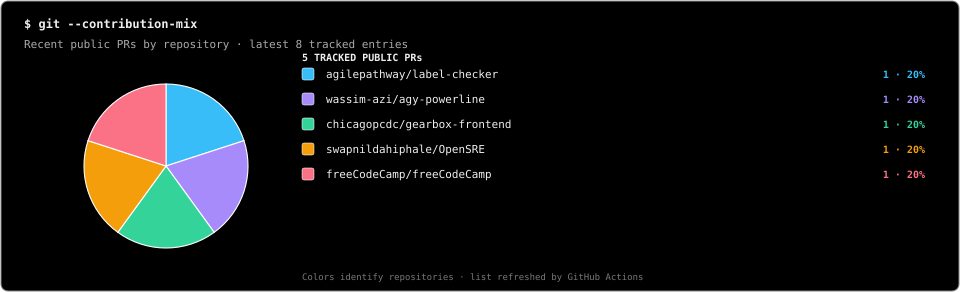

Khanan Suraksha
A bilingual mining-safety and governance platform for reporting, inspections, compliance workflows, and geo-tagged field observations.
I build practical projects, explore real codebases, and contribute fixes, tests, and documentation. I keep learning through DSA practice, projects, and open-source work.
I'm a BTech Computer Science student at LNMIIT interested in practical software projects, problem-solving, and open-source development. I enjoy exploring unfamiliar codebases and improving them through features, bug fixes, tests, and documentation.
A bilingual mining-safety and governance platform for reporting, inspections, compliance workflows, and geo-tagged field observations.
A programming analytics dashboard focused on contest trends, performance insights, topic coverage, and problem-solving consistency.
Multicolor distribution of recent public pull requests by repository. This chart refreshes from GitHub activity.
